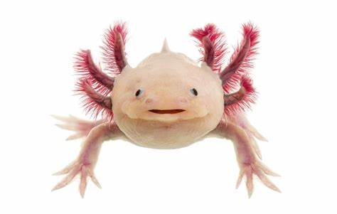

Axolote (Ambystoma mexicanum)
A salamandra que nunca cresce
O Axolote é um tipo de salamandra que passa toda sua vida na fase larval. Esse fenômeno é conhecido como neotenia. Ao contrário de outras salamandras, ele permanece aquático e pode regenerar membros, coração e até partes do cérebro!
Curiosidades Rápidas
- 🔹 Pode viver até 15 anos em cativeiro.
- 🔹 Seu nome significa "Monstro d'água" em Nahuatl.
- 🔹 É um dos animais mais estudados por cientistas devido à sua regeneração.
- 🔹 Existem Axolotes em diversas cores, incluindo albinos!